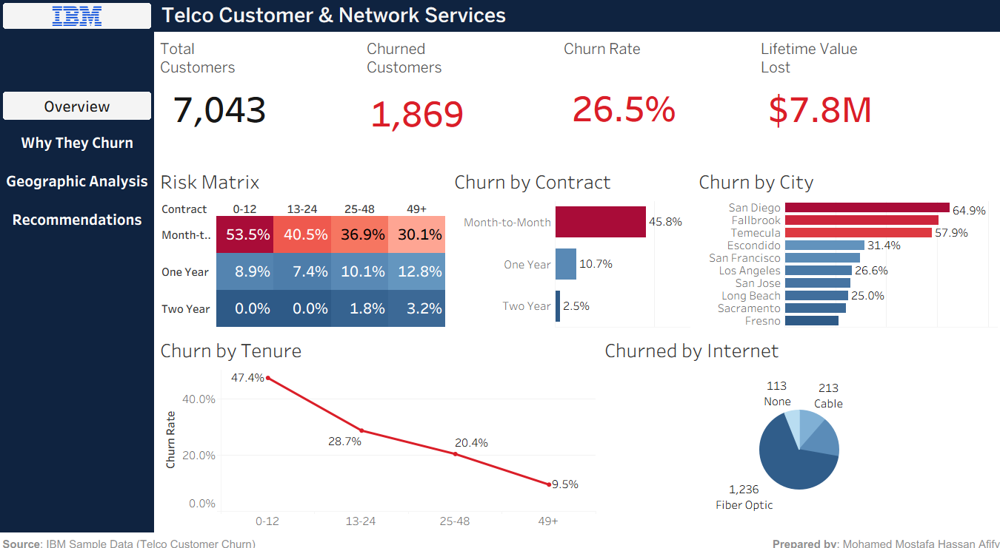

26.5%
of a 7,043-customer base was leaving, and the answers were split across five disconnected tables.
IBM Telco — Customer Churn
I modelled the five tables into a SQL Server star schema, then wrote 15 T-SQL queries structured as a story: how big, who, where, why, and what's at risk.
A Python pipeline handled the cleaning — domain-aware imputation, IQR capping with a zero-variance guard, and removal of every target-leakage column.
Month-to-month customers churn 18× more than two-year ones. Four connected Tableau dashboards turned that into five retention recommendations.
SQL SERVERT-SQLPYTHONTABLEAUSTAR SCHEMA
REPOSITORY →
+ Engineering note — the guard that saved the pipeline
IQR capping is standard until a column has zero variance: Q1 and Q3 land on the same
value, the fence collapses to a single point, and every row is flagged an outlier at
once. The fix was a zero-variance guard that skips capping for those columns
rather than trusting the formula blindly. Separately, several columns predicted churn
almost perfectly — because they only exist after a customer leaves. Every one of
those target-leakage columns was removed before modelling.
Churn by contract typeN = 7,043
SOURCE: 15 T-SQL QUERIES OVER THE STAR SCHEMA · AXIS SCALED TO 50%

TABLEAU · 4 CONNECTED DASHBOARDS